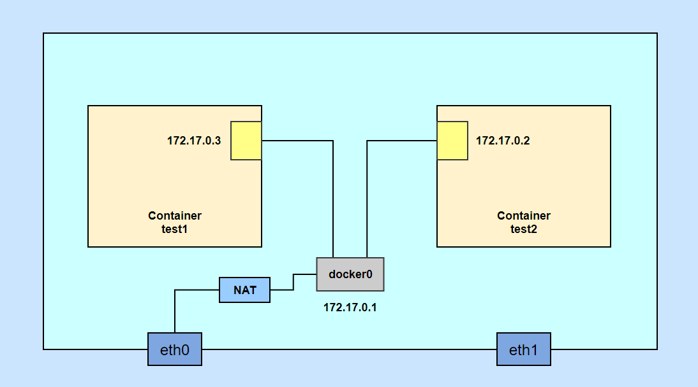
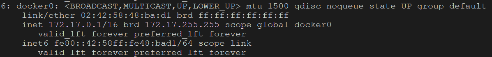
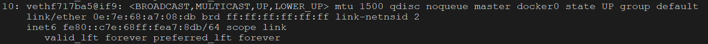

基本命令
查看docker网络
1
docker network ls
查看docker网络详情
1
docker networker inspect $id
bridge
图示

安装工具
1 | yum -y install bridge-utils |
查看docker网络接口和容器网络接口的关系
- docker本机的网络接口：docker0

- 容器的网络接口：vethf717ba5

- 查看docker0被哪些容器的网络接口连接
1 | brctl show docker0 |
none
- 没有ip和mac地址
- 适用于安全性要求高的容器
host
- 与主机的网络共享
- 安全性低
- 存在主机端口和容器端口冲突的情况
本机容器间的连通
--link
作用：使container-1连通container-2（注意–link是单向连通，即container-1能通container-2，反过来不通）
--network
作用：使container-1和container-2互相连通
1 | docker network create -d bridge $self-bridge |
1 | docker run -d --name $container-1 --network $self-bridge |
1 | docker run -d --name $container-2 --network $self-bridge |
--network connect
作用：使container连接到指定的网络
1 | docker network connect $self-bridge $container |
小结
两个容器如果连接到自定义的网络（不是docker0的网络），默认可以使用网络接口名称访问。
两个容器如果连接到docker0，必须使用--link才能使用网络接口名称访问。